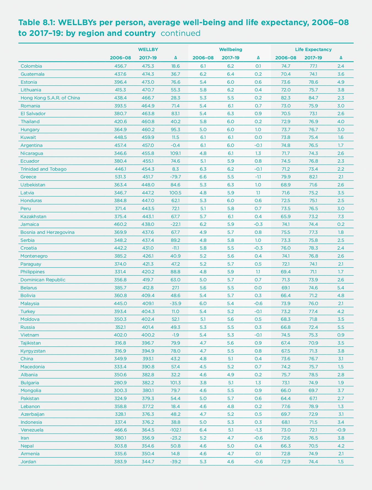

Living long and living well: The WELLBY approach
Most accounts of well-being focus on the experience of the living. But, if we are to judge the overall welfare of a country, we must also consider how long people live. This is vital
- whenever we want to evaluate a policy change, and
- when we want to compare how different countries are doing.
In this chapter, we tackle four major questions:
- How can we combine the length of life and its quality into a single metric?
- How can we use this metric for policy?
- What does this metric show about the performance of different countries?
- What does this metric imply for the monetary equivalent of a life lost?
The Wellby Approach
The well-being approach to these issues is simple. People want to live well, and they want to live long. Therefore, we should judge a society by the extent to which it enables people to experience lives that are long and full of well-being. For any individual, the measure of this is simply the well-being she experiences each year summed up over all the years that she lives.
A natural name for the well-being experienced over one year is a Well-Being-Year (or WELLBY).[1] What we want to maximise, across people in all present and future generations, is their number of future WELLBYs - with one qualification. Things that happen in the future are increasingly uncertain the further we look, and we, therefore, apply a “pure time discount rate,” δ.[2] Thus
$$(1)\ Future\ social\ welfare = \ {\frac{\sum}{i}\frac{\sum}{t}}\ WELLBY_{\text{it}}\ {(1 - \delta)}^{t}$$
where i is the individual and t is the number of years ahead. Well-being is measured on a scale of 0-10.
Some Key Assumptions
In following this approach, we are making four key assumptions. The first is that well-being is measured like weight – the difference between 3 and 4 is the same as the difference between 7 and 8. There is good evidence that when people answer questions, they do it in this way.[3] The second is that people who are dead score 0. To validate this, researchers are beginning to ask people what point on the scale is as bad as being dead. So far, there is no strong evidence against assuming the answer is 0.[4] Third, in evaluating the changes produced by a policy, we shall ignore the changes in the objective, which results from changes in the number of births. Thus, we are focusing essentially on WELLBYs per person born. Finally, we are simply adding up well-being experience, as Bentham recommended, without giving extra weight to the prevalence of misery. We do this because choosing such weights is an ethical issue on which people differ, though individual policymakers may wish to use them.
This concept of the role of the state goes back to the 18th Century Enlightenment.[5] As Thomas Jefferson put it, “The care of human life and happiness… is the sole legitimate object of good government.” We shall revert to the policy in more detail later on. But before that, we shall look at how different countries are doing when we take the length of life into account (as well as well-being).
The Performance of Nations
To do this, we focus on the present rather than the future, and this requires a slightly different metric. For clearly, it is not easy to measure the length of life at one moment in time. But demographers have a clever way of doing it. They do not calculate the prospects of each cohort born. Instead, they construct a snapshot of mortality rates at each age in the current year. Thus the “expectation of life” today is how long someone born now could expect to live if her chance of dying at each age was the same as that experienced this year by people of that age. This roots the calculations of life expectancy in data from the current year. We can do the same with our measure of well-being.
Hence the measure of national social welfare today is average current well-being ($({\overline{W}})$) times the expectation of years (Y) of life:[6]
So how does taking a length of life into account in this way change our ranking of countries? And which countries have been doing the best in terms of the changes they have achieved in social welfare?

In Table 8.1, we present the ranking of countries according to their level of WELLBYs per person in 2017-19. Remarkably, the top 11 countries in terms of WELLBYs are the same as the top 11 in Well-being. This is because life expectancy is so similar across the top 19 or so countries. At the very top is Finland, both in Well-being and in WELLBYs. Again, at the bottom, the lowest 11 countries in terms of WELLBYs include most of those which are also lowest in well-being. Overall, the correlation across countries between well-being and WELLBYs is 0.97 (while that between life expectancy and WELLBYs is 0.87). So adding in the length of life makes little difference to the ranking of countries by well-being, with which we are already familiar.
However, adding in the length of life transforms our understanding of human progress over time. Since 2006-08, world well-being has been static, but life expectancy increased by nearly four years up to 2017-19 (we shall come to 2020 later). The rate of progress differed a lot across regions. The biggest improvements in life expectancy were in the former Soviet Union, in Asia, and (the greatest) in Sub-Saharan Africa. And these were the regions that had the biggest increases in WELLBYs. In Asia, the exception is South Asia, where India has experienced a remarkable fall in Well-being which more than outweighs its improved life expectancy. Life expectancy grew slowest in North America, which also had a substantial fall in well-being – hence an overall fall in WELLBYs. The other area where well-being fell was the Middle East/North Africa, and that area also experienced a fall in WELLBYs.
One thing is clear. Since 2006-08 there has been a huge reduction in the inequality of social welfare between countries. This is not because well-being has become more equal – it has not, due to the huge fall in well-being in India. But life expectancy has become much more equal, and the seven years increase in sub-Saharan Africa is truly remarkable.
Coming to 2020, life expectancy fell substantially. In the first year of COVID-19, two million people died of the disease – an increase of some 3.4% in deaths worldwide. But most of the deaths have been among older people, so the fall in life expectancy is much less than 3.4%. In the USA, which had a high death rate, one estimate is that life expectancy fell by one year in 2020.[7] Similar estimates have been made for Britain, which has also had a high death rate.[8] But, even if the fall in life expectancy in 2020 worldwide were as much as one year, this would not altogether undo the gain of 3.7 years over the preceding decade.
So, sticking with 2020, what can be said about the change in overall social welfare? It will have fallen if the proportional fall in life expectancy exceeded the proportional rise in average well-being.[9] As Chapter 2 showed, estimated well-being fell in half the countries of the world and rose in the other half. But life expectancy probably fell in most countries. Not a good year.
Public Policy
Until recently, it was not possible to apply the WELLBY approach to public policy for lack of direct quantitative information about well-being. So effects on well-being had to be inferred from people’s choices, and cost-benefit analysis done this way could only be applied to a limited range of policy choices. Now, however, the science of happiness provides direct evidence on measured well-being and what affects it. This makes it possible to analyse policy in a quantitative way over a much wider range of policy areas. The numbers may not be perfect, but it is far better to use empirically-based numbers than pure hunch.[10]
So we now have for the first time a way of dealing with the fundamental problem of all public policy – how to compare the claims of different policies whose aims are not obviously commensurable. Using WELLBYs, we have at last a common currency with which to compare the outcomes of all policies.
The new objective is, in fact, not that different from the objective of many existing health services, but more ambitious. They talk about Quality-Adjusted Life Years (or QALYs), and by quality of life they mean the “health-related” quality of life of the individual patient. But we are concerned with people’s well-being, whatever its source, and we are concerned with everybody who is affected by any decision.
Policymakers have many levers: they can spend money, raise money, and make regulations. All these decisions should be based on their impact on WELLBYs. When it comes to spending money, the most realistic approach is to assume that the total amount of public expenditure is a political decision. But, once the total is determined, it is vital that it should be spent effectively - to produce the greatest possible WELLBYs. This means that spending policies should be ranked according to the total WELLBYs they produce per dollar of expenditure and authorised in that order until the available budget is exhausted. A number of countries already analyse the impact of new spending policies upon the well-being of the population.[11] New Zealand has an annual well-being budget, and the EU Council of Ministers and the OECD have requested their members to “put people and their well-being at the centre of policy design.”[12] This should include policies on regulation and tax as well as spending. All policies should be based on the total WELLBYs that result.
As regards COVID-19 policy, as the earlier chapters in this report show, the right strategy in 2020 was to suppress the virus. Countries that did this had fewer deaths and a better economy. There was no need to balance one against the other. However, in 2021 we shall increasingly have the vaccine. So, for countries that have failed to suppress the virus so far, the best course now may involve accepting some cases of illness (while the vaccine is being distributed) in order to protect the economy, children’s education, and the mental health of the population. For such a balancing act, the WELLBY approach is helpful and is illustrated in Layard et al. (2020).[13]
The Monetary Value of a Life Year
In this balancing act, we have to take into account everything which affects WELLBYs. Besides much else, this includes the impact on WELLBYs of life-years lost and of changes in incomes. There is, thus, in any policy evaluation, an implicit measure of the amount of money that is of equivalent value to a year of life lost. For decades governments have been using estimates of this number to evaluate health interventions and safety improvements in road, rail, air transport, and workplaces. These have been obtained using quite different methods from the WELLBY approach. Interestingly, the numbers they provide would not justify any of the lockdowns we have seen in Europe or the USA.[14] And yet, the public approve the lockdown.[15] So it is interesting to ask if the WELLBY approach offers similar or higher numbers compared with traditional approaches.
We shall revert shortly to the traditional estimates, which involve extended chains of inference. But by contrast with them, the WELLBY approach is very direct. We simply find out
(i) the number of WELLBYs lost when a year of life is lost, and
(ii) the loss of money, which (when spread over a large number of people) would produce the same loss of WELLBYs.
(i) On the WELLBY value of a life year, we assume that if someone dies one year earlier than otherwise, the loss of WELLBYs equals average well-being in the population. The reasoning is that we all want a life that is both long and enjoyable — in other words, we wish for the maximum of WELLBYs in our life. If a year of life is lost, that is a loss of WELLBYs. In advanced societies, the average WELLBYs per year lived is 7.5 (out of a maximum of 10), and that is therefore the cost (in WELLBYs) of a year of life lost.
(ii) On the value of money (measured again in WELLBYs), we know a huge amount from equations where life-satisfaction (0-10) has been regressed on log income.[16] So suppose $(Wellbeing\ = \ \propto Log\ Income)$. Then the impact of an extra dollar of annual income on annual well-being is $({\propto}/{\text{Annual income}})$.[17]
So what is the value of $(\propto)$? Within four advanced countries, the coefficient on log income is between 0.15 and 0.30 in cross-sectional regressions (and very much lower in panel analysis). Similar studies using the Gallup World Poll for nearly every country in the world give an average coefficient (with a few controls) of 0.16 in advanced countries and 0.28 in middle and low-income countries — again, a similar range.[18] However, there are two factors that could make this an underestimate, while two others go in the opposite direction.
If income affects some of the variables controlled for, then income has a bigger true effect than has been allowed for. Removing all controls raises the coefficient by a multiple of between 1.5 and 2.
If income is measured with error, we should also raise the coefficient.
On the other hand, in any equation there must be unobservable differences between people, which are positively correlated with both income and well-being and thus tend to exaggerate the effect of income. This is one reason why panel estimates of the effects of income are typically two-thirds lower than those so far quoted. (Other reasons are additional effects of measurement error and problems of timing). One interesting way to reduce the effect of unobserved variables is to study the effect of purely exogenous shocks on income. One type of income that is completely exogenous is the size of lottery wins (among those who play the lottery). In one careful study, the effect of money gained in this way is to raise well-being in a way equivalent to a coefficient of 0.38 on log income.[19]
A final complication is that there is overwhelming evidence that much of the effect of income measured in these studies is an effect of relative income.[20] But the point of estimating the value of a life-year is to answer the question, “What fall in absolute income, shared across the population, would be as bad as the loss of a life-year.” There is good evidence that an absolute change in national income per head has a smaller effect than the effects of changes in individual income quoted so far. These latter are measured holding other incomes constant and therefore include the effect of gains in relative income. One type of evidence on the effects of absolute income comes from looking at country time-series. In European countries since 1970 o, one estimate is that an increase in trend log income raised well-being by 0.2, with very wide confidence intervals.[21]
Based on all this evidence, we propose to use the figure as 0.3 as a generous measure of the impact on well-being (0-10) of a unit change in absolute log income. From this, it follows that the loss of WELLBYs from one dollar fall in annual income is no higher than 0.3 / Average annual income. If the average annual disposable income per head is $30,000, the loss of $1 when widely spread is equivalent to the loss of 1/100,000 WELLBYs.
(iii) Thus, in rich countries, the loss of $1 reduces WELLBYs by around 1/100,000. At the same time, an extra year of life delivers an average of 7.5 WELLBYs. So we should be willing to pay up to around $750,000 (widely spread) to save one Life-Year. In the WELLBY approach that is the monetary value of a Life-Year. It is a large number and (as we shall see) higher than traditional values. Two comments are in order.
First, traditional values would not justify most lockdowns, but the people support the lockdowns. Second, if public expenditure is constrained, it would not be right to fund all savings of a life-year that cost less than $750,000. But in this constrained situation, life-years should still be valued at that level relative to monetary outcomes.
The well-being approach to this issue is relatively new. [22] But over the last forty years, other methods have been used to produce a range of numbers used by governments in many countries. These methods fall into two main types, based on either “revealed preference” or “stated preferences.”
Revealed preference
The revealed preference method relies mainly on the wages paid in jobs that differ in the frequency of fatal accidents. The basic idea is that, for people of a given ability, a higher risk of death has to be compensated by a higher wage. More precisely, there is (for people of given ability) a market relationship, w = f(p), where a higher probability of death (p) is associated with a higher wage (w).[23] Along this market line, each individual chooses a point where the extra wage equals her subjective valuation of the extra risk, while at the same time, each firm chooses a point where the extra wage is matched by the reduced cost of safety measures. Only when all individuals and all firms are in equilibrium is the market relationship stable. (see Figure 8.1)
If all firms and individuals share the same, correct information about risk, we can claim that the slope of the line w=f(p) measures the monetary equivalent of a prevented fatality.[24]
Many such evaluations have been used by different agencies. In 2011 and 2012, a variety of US government agencies valued a prevented death at between $6 million and $10 million.[25]
Such estimates are, of course, generated by the choices of workers of a wide variety of ages. So, to move from the value of a prevented fatality to the value of one life-year saved, we have to allow for the remaining life expectancy of those who die. Suppose this is 40 years, and applying no discount rate, we would get the value of a life-year of $150k to 250k. But those figures should be increased somewhat to allow for discounting. The resulting calculation would, however, be lower than the typical result of the WELLBY calculation that we have documented.
In comparing the two, we should remember that the labour market valuation depends very much on the assumption of accurate information on the part of workers. It is also based on people’s ex ante valuations of the risk of death, whereas the well-being estimate is essentially ex-post – it relies on an empirical estimate of how much well-being is actually lost (plus the marginal value of money).
From 2006-08 to 2017-19 social welfare in the world rose from 369 to 374 WELLBYs per person; in 2020 life expectancy fell in most countries, though not enough to wipe out at world level the gains since 2006-08.
Stated preferences
The second approach that has been widely used depends on people’s answers to hypothetical questions about how much they would be willing to pay for a reduced probability of death. This is the preferred method in the UK. It results in lower numbers, and the UK government currently uses a figure of £1.6 million for a prevented fatality and £60k for a life-year.[26]
The argument for the stated preference approach is that it addresses the question of valuation directly. The main problem with it is that people have great difficulty thinking clearly about very small probabilities. For example, in one study, 40% of respondents reported the same willingness to pay for a reduced probability of 4 in 100,000 and a reduced probability of 12 in 100,000.[27]
There is another problem. The question of valuation can, of course, be put in two ways.
How much would you pay to achieve some given reduction in the probability of death?
How much would you need to be paid to give up the same reduction in the probability of death?
For small changes, these numbers should, in theory, be very close to each other. But people, in fact, give answers to the second question that are almost five times higher – because they see it as a loss.[28] This is a big problem.
And there is a further problem with both stated preference and revealed preference methods: they estimate what an individual would be willing to pay for a reduced risk of death on the assumption that other people’s incomes are unchanged. But in fact, if taxes were raised to finance increased safety, other people’s incomes would also fall. This fall in comparator income would partly offset the loss of well-being experienced by each individual from the loss of her own income. So people would each be willing to pay more if others were doing the same. For this reasoning, a country should be willing to pay more in order to save a life. The WELLBY approach provides a more reasonable alternative.
The Impact of COVID
Finally, we can apply the WELLBY approach to estimating the combined impact of COVID on social welfare, taking into account only its effect on income per head, unemployment, and life expectancy. So unlike the rest of the chapter, we are not looking at estimates of the total change in well-being but only at estimated effects on well-being coming through GDP per head and unemployment. We start from equation (2) so that, if we look at proportional changes, we have the following.
$({\text{(3)}}\frac{\mathrm{\Delta}\ Social\ welfare}{\text{Social welfare}} = \ \frac{\mathrm{\Delta}\ Average\ wellbeing}{\text{Average wellbeing}} + \ \frac{\mathrm{\Delta}\ Life\ expectancy}{\text{Life expectancy}})$
But for the present purpose, we are only interested in changes in well-being coming from GDP per head and unemployment. Thus, the equation we use to calculate Table 8.2 is[29]
$({\text{(4)}}\frac{\mathrm{\Delta}\ Social\ welfare}{\text{Social welfare}} = \ \frac{0.3\ \mathrm{\Delta}\log{(GDP/N})}{\text{Average wellbeing}}\ - \ \frac{1.2\ \mathrm{\Delta}\ u}{\text{Average wellbeing}} + \ \frac{\mathrm{\Delta}\ Life\ expectancy}{\text{Life expectancy}})$
where N is population, and u is the proportional rate of unemployment. For the last term, we assume that it bears the same ratio to Deaths per million as it does in the US.[30] The results are therefore very approximate and provisional. They are shown in Table 8.2.
Column (1) shows the percentage change in welfare due to changes in GDP, Column (2) does the same for changes in unemployment, and Column (3) does the same for deaths from COVID-19. Despite the approximate and provisional nature of the data, we have ranked countries according to how much they have suffered from these three factors combined, starting with those that suffered most.
Those who have suffered most include South Africa, the USA, and many Latin American countries. Most European countries come in the next group down. And in the least affected group come all the main parts of East and Southeast Asia (mainland China, Taiwan, Cambodia, Thailand, Vietnam, Singapore, and Japan).
It is extremely interesting to look at the correlation of death rates and losses to GDP. Across 79 countries, the correlation is positive and quite substantial (r = 0.38). In other words, countries that controlled the virus also avoided the economic losses which affected other countries.[31]
Conclusions
The WELLBY approach offers the most plausible way of combining well-being with the length of life. It assumes that the value of life comes from the well-being it provides. We do not rely on how individuals respond to the ex-ante risk of losing their lives but on the ex-post satisfaction that life actually delivers. And we do this because of our view that a good society delivers lives that are both long and satisfying.
This approach serves two purposes. First, it provides us with a more comprehensive way of assessing human progress and the performance of different countries. The story is basically positive. From 2006-08 to 2017-19 social welfare in the world rose from 369 to 374 WELLBYs per person. This was because, while well-being fell somewhat, life expectancy rose by 3.7 years. And WELLBYs became more evenly distributed across the world because life expectancy rose most in low-WELLBY regions.
However, in 2020 life expectancy fell in most countries, though not enough to wipe out at world level the gains since 2006-08. At the same time, the economy shrank, and unemployment increased. But typically, those countries which controlled the virus best also experienced the least hit to the economy – there was no trade-off between these two outcomes.
The second use of WELLBYs is to evaluate policy options. Well-being science now provides enough evidence for this to become more and more feasible. It should be used wherever possible to evaluate future strategies against COVID-19. And within 20 years, it will surely become the standard method of policy evaluation in more and more countries.
References
Aburto, J. M., Kashyap, R., Schöley, J., Angus, C., Ermisch, J., Mills, M. C., & Dowd, J. B. (2021). Estimating the burden of the COVID-19 pandemic on mortality, life expectancy and lifespan inequality in England and Wales: a population-level analysis. Journal of Epidemiol Community Health.
Andrasfay, T., & Goldman, N. (2021). Reductions in 2020 US life expectancy due to COVID-19 and the disproportionate impact on the Black and Latino populations. Proceedings of the National Academy of Sciences, 118(5).
Bentham, J. (1789). [An Introduction to the Principles of Morals and Legislation]. Oxford, Clarendon Press.
Chilton, S. et al (2020) A scoping study on the valuation of risks to life and health: the monetary Value of a Life year (VOLY). UK Health and Safety Executive.
Clark, Andrew E., Paul Frijters, and Michael A. Shields. 2008. “Relative Income, Happiness, and Utility: An Explanation for the Easterlin Paradox and Other Puzzles.” [Journal of Economic Literature], 46 (1): 95-144.
Clark, A. E., et al. (2018). [The Origins of Happiness: The Science of Wellbeing over the Life Course], Princeton University Press.
Council of the European Union. (October 2019). The Economy of Well-being: Creating Opportunities for people’s well-being and economic growth. P. R. Committee. Brussels, Council of the European Union. Draft Council conclusions on the Economy of Well-being
De Neve, J.-E., Clark, A., Krekel, C., Layard, R., & O’Donnell, G. (2020). Taking a well-being years approach to policy choice. The British Medical Journal. 371:m3853
Di Tella, R., MacCulloch, R., & Oswald, A. J. (2003). The macroeconomics of happiness. Review of Economics and Statistics, 85(4), 809-827.
Dolan, P. and D. Kahneman (2008). “Interpretations of utility and their implications for the valuation of health.” [Economic Journal] 118 (525): 215-234.
Dolan, P., (2011). “Using Happiness to Value Health,” Monographs, Office of Health Economics, number 000176.
Dolan, P., & Jenkins, P. (2020). Estimating the monetary value of the deaths prevented from the UK Covid-19 lockdown when it was decided upon–and the value of “flattening the curve”. LSE mimeo.
Dubourg, Jones‐Lee, and Loomes, G. (1997), Imprecise Preferences and Survey Design in Contingent Valuation. [Economica], 64: 681-702.
Duffy, B., & Allington, D. (2020). The accepting, the suffering and the resisting: the different reactions to life under lockdown. King’s College London.
Durand, M. (2018). Countries’ Experiences with Well-being and Happiness Metrics. [Global Happiness Policy Report]. J. Helliwell, P. R. G. Layard and J. Sachs. New York, Sustainable Development Solutions Network.
Easterlin, R. A., & O’Connor, K. (2020). The Easterlin Paradox. IZA Discussion Paper No. 13923.
Frijters, P., Clark, A. E., Krekel, C., & Layard, R. (2020). A happy choice: well-being as the goal of government. [Behavioural Public Policy], 4(2), 126-165.
Kahneman, D., Ritov, I., Chikado, D. (1999). Economic Preferences or Attitude Expressions? An analysis of dollar responses to public issues. [Journal of Risk and Uncertainty]. 19:1-3; 203-235.
Krueger, A. B., & Schkade, D. A. (2008). The reliability of subjective well-being measures. [Journal of Public Economics], 92(8-9), 1833-1845
Layard, R., Mayraz, G., & Nickell, S. (2008). The marginal utility of income. [Journal of Public Economics], 92(8-9), 1846-1857.
Layard, R., et al. (2010). Does relative income matter? Are the critics right? [International Differences in Well-Being]. E. Diener, J. F. Helliwell and D. Kahneman. New York, Oxford University Press: 139-165.
Layard, R.,Clark, A., De Neve, J. E., Fancourt, D., Hey, N., Krekel, C., & O’Donnell, G. (2020). When to release the lockdown: a well-being framework for analysing costs and benefits. Centre for Economic Performance, LSE. (Occasional Paper No. 049).
Lindqvist, E., Östling, R., & Cesarini, D. (2020). Long-run effects of lottery wealth on psychological well-being. The Review of Economic Studies, 87(6), 2703-2726.
Mill, J. S. (1861). [Utilitarianism]{.ul}. London, Everyman.
OECD. (2016). Strategic Orientations of the Secretary-General: For 2016 and beyond. Retrieved from Meeting of the OECD Council at Ministerial Level Paris, 1-2 June 2016. https://www.oecd.org/mcm/documents/strategic-orientations-of-the-secretary-general-2016.pdf
Peasgood, T., Brazier, J., Mukuria, C., & Karimi, M. (2018). Eliciting preference weights for life satisfaction: a feasibility study. Mimeo.
Rosen, S. (1986). The theory of equalizing differences. [Handbook of Labor Economics Volume I]. O. Ashenfelter and R. Layard (eds).
Tunçel, T., & Hammitt, J. K. (2014). A new meta-analysis on the WTP/WTA disparity. [Journal of Environmental Economics and Management], 68(1), 175-187.
Viscusi, W. K., & Aldy, J. E. (2003). The value of a statistical life: a critical review of market estimates throughout the world. [Journal of risk and uncertainty], 27(1), 5-76.
Viscusi, W. K. (2014). The value of individual and societal risks to life and health. In [Handbook of the Economics of Risk and Uncertainty] (Vol. 1, pp. 385-452). North-Holland.
Endnotes
For a fuller treatment see De Neve et al (2020). ↩︎
This is often assumed at 1.5% per annum. ↩︎
If they do, we would expect the test-rest differences to be similar at different parts of the scale. They are (Krueger and Schadke (2008)). ↩︎
But see Peasgood et al (2018). ↩︎
Bentham (1789). Mill (1861). ↩︎
The product of two averages is not the same as the average of the product but in this case it is a good approximation since wellbeing is similar across ages. ↩︎
Andrasfay, T., & Goldman, N. (2021). ↩︎
Aburto, J. M et al (2021). ↩︎
$(Social\ welfare = \overline{W}Y,\ so\ social\ welfare\ rises\ if\ \ \mathrm{\Delta}\log{\overline{W} + \ \mathrm{\Delta}\log{Y > 0}})$ ↩︎
For a useful survey of quantitative estimates of the effects on wellbeing of a whole range of factors see Frijters et al (2020), Table 1. ↩︎
For example, France, Sweden. See OECD (2016). ↩︎
See European Council (2019). https://data.consilium.europa.eu/doc/document/ST-13171-2019-INIT/en/pdf. ↩︎
Layard et al (2020). ↩︎
On the UK see Dolan and Jenkins (2020). A similar point has been made by Paul Frijters and others. ↩︎
See for example Duffy and Allington (2020) ↩︎
This is the functional form with the best power to explain life-satisfaction (Layard et al 2008). ↩︎
If $(W = 0.3\log Y,\ \ dW/dY = 0.3/Y)$ ↩︎
Clark et al (2018), table 2.2. Britain, Germany, Australia and US. For the whole world Chapter 2 of this report finds a coefficient of 0.25. ↩︎
Lundqvist et al (2020). ↩︎
Clark et al (2008). Layard et al (2010). ↩︎
Layard et al (2010). Using a wider range of countries. Wolfers et al (2013) got a higher figure, with again wide confidence intervals. By contrast Easterlin et al (2020) find no effect. ↩︎
It was first proposed by Dolan (2011). ↩︎
Viscusi and Aldi (2003), reflecting Rosen (1986). ↩︎
For example, suppose
$(w = \ a + bp,\ where\ w\ is\ the\ annual\ wage\ and\ p\ the\ annual\ probability\ of\ death.)$
$(If\ N\ workers\ experience\ a\ given\ \mathrm{\Delta}p,\ then\ the\ total\ change\ in\ wages\ is\ b\mathrm{\Delta}p.N.)$
\(If\mathrm{\Delta}p.N\ equalled\ one,\ there\ would\ be\ one\ life\ lost\ per\ year\ and\ the\ total\ wage\ compensation\ per \ year\ would\ be\ $b.\) ↩︎Viscusi (2014). ↩︎
Chilton et al (2020). Note that in the wellbeing approach the quality of life is measured directly. In the QALY approach used by the British NHS the quality of life of a given medical condition is measured by comparison with a fully healthy life by a time-trade-off exercise. (People are asked “If you could have either ten years with your condition or x years without your medical condition, what value of x would make you indifferent?”). For a critique of this approach see Dolan and Kahneman (2008) who advocate a wellbeing approach to measuring the quality of life in the presence of a disease. ↩︎
Dubourg et al (1996). For a devastating analysis of the stated preference approach in general see Kahneman et al (1999). Focusing illusion is a particular problem. ↩︎
Tuncel and Hammitt (2014) ↩︎
The coefficient of 1.2 comes from a cross-national cross-section regression. A similar coefficient comes from Di Tella et al (2003). For substantially higher coefficients, see Clark et al (2018) Table 4.4. ↩︎
In the USA in 2020, COVID-19 deaths were 1.049 per 1000. And life expectancy fell by 1 year i.e. by 1.2%. ↩︎
The correlations between the columns are r12 0.32, r13 0.38, r14 0.63, r23 0.14, r24 0.68, r34 0.79. For 49 countries covered in Chapter 2 and Table 8.2, the correlations between the measured changes in well-being and columns (1)-(4) in this table are: (1) 0.12; (2) 0.34; (3) 0.33; (4) 0.31. ↩︎